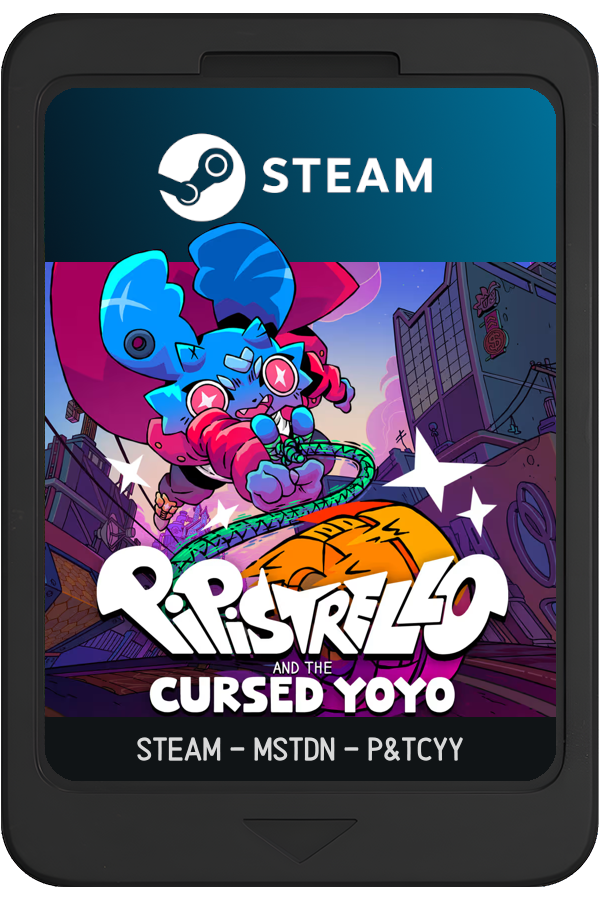

Pipistrello and the Cursed Yoyo
Every archived year-end list appearance, including placement and points earned.
About the Game
Explore a vast urban landscape in this exciting 2D top-down platforming adventure! Pipistrello and the Cursed Yoyo combines combat, platforming action, puzzle-solving, and exploration — all enveloped in a delightful character-driven story about corporate shenanigans! Face off against the rival crime entrepreneurs and their underlings using the weapon you know best: your prized yoyo! Featuring Yoko Shimomura as a guest composer, so prepare yourself an authentic nostalgia blast!Pay close attention to your surroundings to discover new ways to traverse the terrain! With each newly-learned yoyo trick, you'll come to reinterpret the cityscape, and by chaining these maneuvers together, you'll be able to dexterously reach places you could never have imagined! Many challenges have multiple solutions — so come up with your own novel routes in this mouth-watering adventure!Features Explore the city's 4 districts with over 1000 screens' worth of challenges and secrets! Infiltrate the businesses of the 4 crime bosses! Navigate their labyrinthine buildings, take on foes, and solve action puzzles! Master over 10 yoyo tricks and Special Moves to create your own yoyo-parkour routes and pulverize your enemies in combat! Collect over 40 equippable Badges that alter the way you play! Unlock over 20 passive Upgrades through a shady loan shark! Find over 80 other collectibles throughout town, from life upgrades to precious treasures! Corporate shenanigans abound!Pippit, the self-declared yoyo master, has never meshed well with the rest of his family: the powerful and influential Pipistrellos, headed by his auntie, Madame Pipistrello. The family's had a firm grip on their city for over a decade, owing to the monopoly on electricity that they hold.It just so happens that, when Pippit finally drops by for his annual visit to the Pipistrello Manor, he gets caught up in the rival companies' nefarious plot to dethrone the Madame and take the source of energy generation for themselves! After the attack, Pippit and the Madame find themselves having to cooperate in a completely new arrangement...... The Big CityYour journey takes place across a huge, bustling city run by rival crime entrepreneurs. From shopping districts to industrial complexes, to a geek culture convention and a sports-addicted neighborhood, you'll track down these dastardly crime bosses that have challenged your own family's dominion over the city!Get ready for the first Yoyovania! It never hurts to be on the lookout for secret nooks and crannies! Carefully explore the city's districts with the aid of your map, and carve your own path towards the bosses' places of business! Venture into their dangerous lairs, crack puzzles, and be prepared for epic showdowns!
| Released | 2025-05-28 |
|---|---|
| Developer | Pocket Trap |
| Publisher | PM Studios |
| Genres | Action, Adventure, Indie |
| Platforms | PC, Nintendo Switch |
SingleplayerSteam AchievementsFull controller supportSteam CloudStory Rich2DExplorationAction-AdventurePixel GraphicsControllerRetroFamily Friendly
Where to Buy
Game information provided by RAWG.
Points by Year
List History
| Year | Source | List | Placement | Points |
|---|---|---|---|---|
| 2025 | NPR | The best games of 2025, picked by NPR's staff | Unranked | 1 |
| 2025 | Slant Magazine | The Best Video Games of 2025 | 3 | 6 |